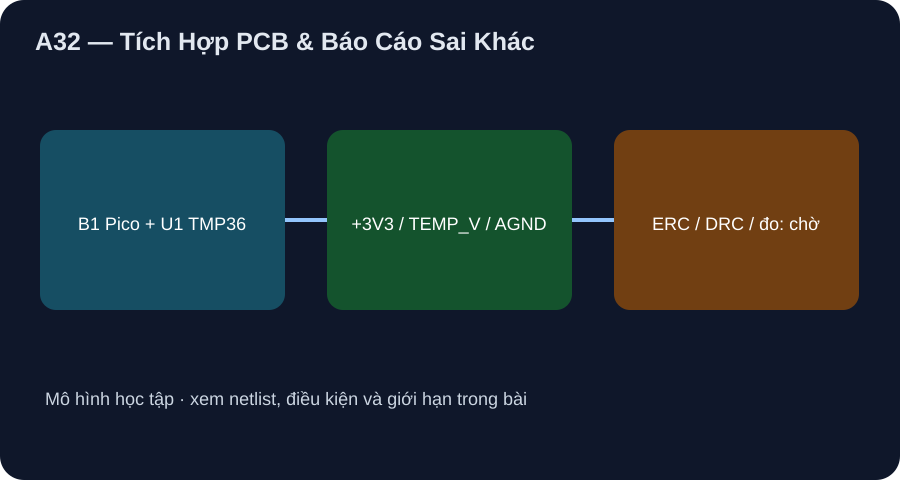

Tích Hợp PCB & Báo Cáo Sai Khác
Chốt net/footprint cần duyệt, đặt tụ gần cảm biến và giữ kết quả mô hình tách đo thật.
- Liệt kê net PCB và kiểm số chân theo package/góc nhìn, không xuất Gerber từ hình minh họa.
- Giải thích vị trí bypass/đường hồi và giữ ngân sách nguồn/sai số xuyên A29–A31.
- Lập báo cáo sai khác có điều kiện, bằng chứng ERC/DRC/đo/reviewer còn chờ.

Đọc hình bằng chữ
Pico board cắm lên carrier. Đường 3V3 từ chân 36 tới chân 1 TMP36 và một đầu tụ C1; VOUT chân 2 tới GP26 chân 31; AGND chân 3 và đầu còn lại C1 tới Pico chân 33. Tụ được đặt gần sensor và TEMP_V ngắn. Danh sách chờ gồm footprint, ERC, DRC, số đo và reviewer.
1. Netlist carrier và BOM
Carrier chỉ dự kiến ba net: +3V3={B1.36,U1.1,C1.1}, TEMP_V={U1.2,B1.31}, AGND={U1.3,C1.2,B1.33}. GP25→LED onboard nằm trong Pico. B1 là Pico non-W, U1 TMP36GT9Z TO-92, C1 gốm 0,1 µF. Chưa chọn part number/footprint của C1 hay loại header; marking U1 và PCB B1 chưa đối chiếu mẫu. ADI TMP36 Rev. H Fig. 4 ghi TO-92 từ đáy; việc gán pad PCB phải kiểm ở đúng góc nhìn. Netlist chữ và hình net lab không thay CAD schematic có ERC.

2. Layout số và ngân sách
C1 sát chân +VS/GND U1 theo ADI Fig. 24, TEMP_V ngắn và có đường hồi AGND rõ; giữ khỏi vùng đường nguồn/switching của board trong bố trí dự kiến. Pico datasheet cho AGND/pinout và nguồn board, không chứng minh một layout mới đã đạt EMI. Ngân sách nguồn như A30: U1 dưới 50 µA, P_U1 dưới 0,165 mW ở 3,3 V; ngân sách sai số như A31 còn VREF/ADC/sensor/chuẩn chưa đo. Mô hình host dự đoán 25 °C→0,75 V/code14894/LED off, 31 °C→0,81 V/LED on, 29 °C sau đó giữ on.
3. Cổng chế tạo và báo cáo sai khác
Trước cấp điện: xác định đúng part/footprint/board marking và schematic revision, dựng KiCad, kiểm net với người độc lập, chạy ERC/DRC rồi ký duyệt; kiểm thông mạch/ngắn khi chưa cấp nguồn. Sau đó mới đo 3V3/VREF/VOUT/raw/nhiệt chuẩn/LED và báo T_est−T_chuẩn cùng uncertainty, setup, firmware, ngày, người duyệt. Hiện tất cả mục này là pending; không có Gerber, PCB, ERC, DRC, phép đo hoặc chữ ký. Mô phỏng host không thể thay bước này.
Xem hồ sơ bốn chặng và lab P9-04 để đọc BOM, netlist, bảng đo và giới hạn. Hình A29–A32 là sơ đồ khối tự vẽ, không là sơ đồ CAD/ERC, layout sản xuất hoặc phép đo board.
Ghi ba net và BOM, chỉ ra vị trí C1 và một lỗi footprint TO-92 có thể xảy ra; nêu bốn bằng chứng cần trước khi công bố mạch thật, và điền hàng báo cáo sai khác khi chưa có board.
- 2 điểm: ba net đúng B1.36/U1.1/C1.1, U1.2/B1.31, U1.3/C1.2/B1.33.
- 2 điểm: C1 gần sensor, TEMP_V ngắn/hồi AGND, không lấy Fig. 4 bottom view thành top view.
- 2 điểm: footprint/part/board, ERC/DRC, đo rail/nhiệt/ADC, reviewer ký là các cổng còn chờ.
- 2 điểm: báo cáo hiện ghi chưa đo/chưa tính/chưa ký, không điền 0 như phép đo.